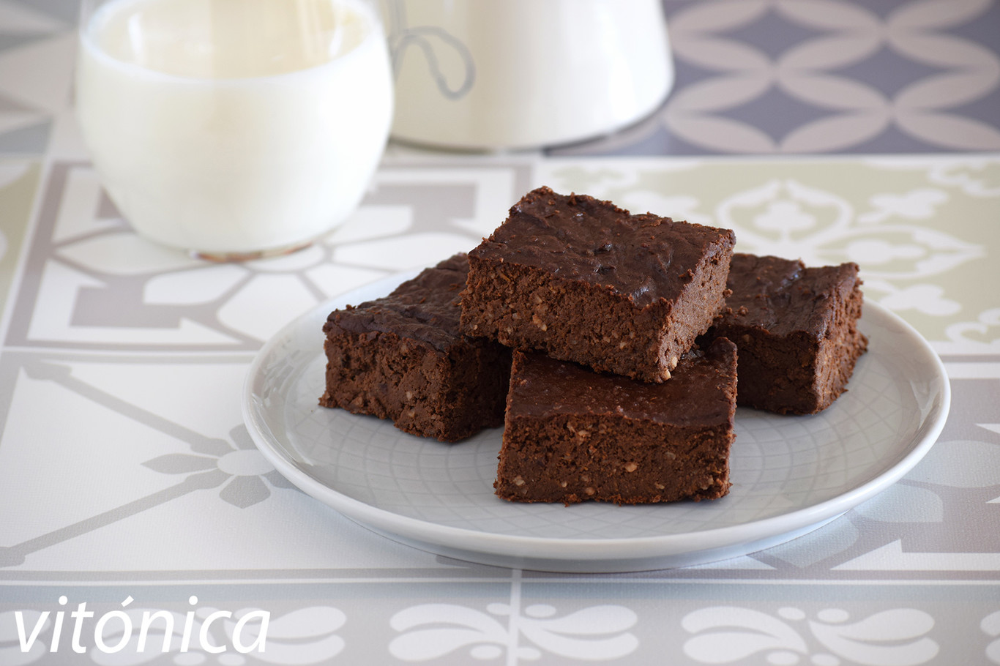
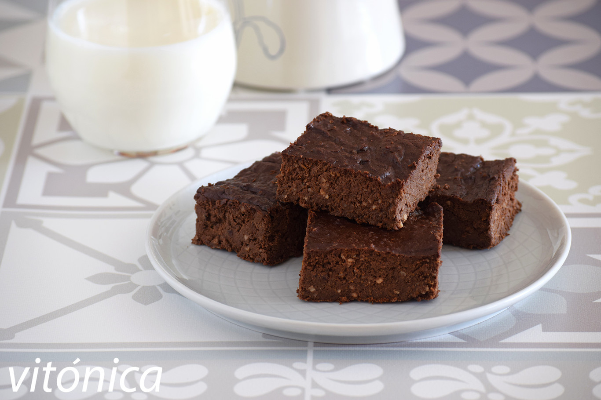

Brownie Fit
 

Quien dijo que no nos podemos dar un gustito?. Ademas de ser super facil y rico, esta receta es super proteica, y a los chicos les encanta en las meriendas.
INGREDIENTES:
PREPARACIÓN:
- Hacer un puré con la fruta.
- Agregarle un huevo y mezclar.
- Unir el resto de los ingredientes a la mezcla.
- Colocar la mezcla en un molde apto para microondas
- Cocinar de 4 a 6 minutos y listo!